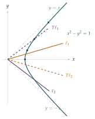

STEP III 1991、第6問
先に進む前に問題を読んでおこう。問題は STEP Support Programme の問題データベースにある： step.maths.org/questions/91-s3-q6
導入
回転行列（rotation matrix）\(\begin{pmatrix} \cos u & -\sin u \\ \sin u & \cos u \end{pmatrix}\) は点を円 \(x^2 + y^2 = 1\) に沿って動かし、\(u\) だけ回転してから \(w\) だけ回転することは、\(u + w\) だけ回転することに等しい。\(\cos\) と \(\sin\) を \(\cosh\) と \(\sinh\) に置き換え、符号を一つ調整すると、この問題の行列が得られる。この行列は点を円ではなく双曲線（hyperbola）\(x^2 - y^2 = 1\) に沿って動かし、やはりその「角」は加法的である。これが双曲線回転（hyperbolic rotation）である。
これは単なる珍しい話ではない。\(x\) を時間、\(y\) を距離（光の速さが \(1\) となる単位で測る）と見なすと、この行列はローレンツ・ブースト（Lorentz boost）になる。すなわち、アインシュタイン（Einstein）の特殊相対性理論（special relativity）で見いだされた、互いに一定の速度で運動する二人の観測者の測定値を結びつける変換である。「双曲角」\(u\) はラピディティ（rapidity）であり、ラピディティが加法的であるという事実が、第 3.8 節 で出会った奇妙な速度の合成則を説明する。
取りかかる前に
\(\cos^2u + \sin^2u = 1\) に相当する、\(\cosh u\) と \(\sinh u\) が満たす恒等式は何か。また、\(\cosh(u + v)\) と \(\sinh(u + v)\) の加法定理はどうなるか。
\(\cosh^2u - \sinh^2u = 1\) であり、 \[\begin{aligned} \cosh(u + v) &= \cosh u\cosh v + \sinh u\sinh v, \\ \sinh(u + v) &= \sinh u\cosh v + \cosh u\sinh v. \end{aligned}\] これらは定義 \(\cosh u = \frac12(e^u + e^{-u})\) と \(\sinh u = \frac12(e^u - e^{-u})\) から確かめられる。点 \((\cos v, \sin v)\) が円上にあるのとちょうど同じように、点 \((\cosh v, \sinh v)\) は双曲線 \(x^2 - y^2 = 1\) 上にある。
順を追って解く
段階 1 双曲線は不変である
\[\begin{aligned} x'^2 - y'^2 &= (x\cosh u + y\sinh u)^2 - (x\sinh u + y\cosh u)^2 \\ &= (x^2 - y^2)(\cosh^2u - \sinh^2u) = x^2 - y^2, \end{aligned}\] 交差項 \(2xy\cosh u\sinh u\) が打ち消し合うからである。よって \(T\) は \(x^2 - y^2\) を保ち、特に双曲線 \(x^2 - y^2 = 1\) をそれ自身に写す。■
原点を通る直線のうち、それ自身に写されるものはどれか。（固有ベクトル（eigenvector）を探せ。）
\(T\begin{pmatrix} 1 \\ 1 \end{pmatrix} = (\cosh u + \sinh u)\begin{pmatrix} 1 \\ 1 \end{pmatrix} = e^u\begin{pmatrix} 1 \\ 1 \end{pmatrix}\) および \(T\begin{pmatrix} 1 \\ -1 \end{pmatrix} = e^{-u}\begin{pmatrix} 1 \\ -1 \end{pmatrix}\) である。よって直線 \(y = x\) と \(y = -x\) はそれぞれそれ自身に写される。一方は \(e^u\) 倍に引き伸ばされ、他方は \(e^{-u}\) 倍に縮められる。これらは双曲線の漸近線（asymptote）である。■
段階 2 双曲角の加法
傾き（gradient）\(\tanh v\) の直線は方向ベクトル（direction vector）\((\cosh v, \sinh v)\) をもつ。その像の方向は \[T\begin{pmatrix} \cosh v \\ \sinh v \end{pmatrix} = \begin{pmatrix} \cosh u\cosh v + \sinh u\sinh v \\ \sinh u\cosh v + \cosh u\sinh v \end{pmatrix} = \begin{pmatrix} \cosh(u + v) \\ \sinh(u + v) \end{pmatrix},\] であり、その傾きは \(\tanh(u + v)\) である。線形写像（linear map）は平行な直線を平行な直線に写すので、このことは直線が原点を通るかどうかによらず成り立つ。したがって \(v' = v + u\) である。■
段階 3 角が保たれるのはいつか
傾き \(m_1\), \(m_2\) の二直線のなす角 \(\psi\) は \(\tan\psi = \left|\frac{m_1 - m_2}{1 + m_1m_2}\right|\) を満たす。\(m_i = \tanh v_i\) のとき、これを簡単にせよ。（ヒント：すべてを分母 \(\cosh v_1\cosh v_2\) でまとめよ。）
\(\tanh v_1 - \tanh v_2 = \dfrac{\sinh(v_1 - v_2)}{\cosh v_1\cosh v_2}\) と \(1 + \tanh v_1\tanh v_2 = \dfrac{\cosh(v_1 + v_2)}{\cosh v_1\cosh v_2}\) を用いると、 \[\tan\psi = \left|\frac{\sinh(v_1 - v_2)}{\cosh(v_1 + v_2)}\right|.\] 変換の後、\(v_1 - v_2\) は変わらず、\(v_1 + v_2\) は \(v_1 + v_2 + 2u\) になる。
\(\cosh(v_1 + v_2) = \cosh(v_1 + v_2 + 2u)\) となるのはどのようなときか。
二直線が平行でない（\(v_1 \neq v_2\)）と仮定すると、角が等しくなるのは \(\cosh(v_1 + v_2) = \cosh(v_1 + v_2 + 2u)\) のとき、かつそのときに限る。\(\cosh\) は偶関数（even function）であり、\([0, \infty)\) で狭義単調増加（strictly increasing）であるから、これは \(v_1 + v_2 = \pm(v_1 + v_2 + 2u)\) を意味する。正の符号からは \(u = 0\) が得られるが、これは除外されているので、 \[v_1 + v_2 = -u. \qed\]
段階 4 図で見る
\(v_1 + v_2 = -u\) のとき、変換後の角は \(v_1' = v_1 + u = -v_2\) および \(v_2' = v_2 + u = -v_1\) である。よって \(\ell_1\) の像の傾きは \(-\tanh v_2\) であり、これは \(\ell_2\) を \(x\) 軸に関して折り返したものである。同様に \(\ell_2\) の像は \(\ell_1\) を折り返したものである。原点を通る直線については、この変換は二直線を入れ替えて折り返すので、両者のなす角が変わらないことがわかる（図 7.6.1）。

振り返り
不変な二次形式。回転が \(x^2 + y^2\) を保つのとちょうど同じように、\(T\) は \(x^2 - y^2\) を保つ。二次形式（quadratic form）の不変性である。
固有ベクトルは漸近線である。不変に保たれる直線は \(y = \pm x\) であり、それぞれ \(e^{\pm u}\) 倍に伸縮される。
双曲角は加法的である。方向を \(\tanh v\) でパラメータ表示すると、\(T\) の作用は単純な加法 \(v \mapsto v + u\) になった。
背後にある数学
アインシュタインの特殊相対性理論（1905年）では、互いに一定の速度で運動する観測者たちは時間と距離について意見が一致しないが、量 \(t^2 - x^2\)（光の速さを \(c = 1\) とする）については全員が一致する。これが時空間隔（spacetime interval）である。これを保つ変換がローレンツ変換（Lorentz transformation）であり、空間が一次元の場合、それはちょうどこの問題の行列で、\(x\) を時間、\(y\) を距離としたものになる。速度 \(v = \tanh u\) で運動する観測者は、この行列によって我々の座標と結びつく座標を用いる。ここで \(\cosh u = \frac{1}{\sqrt{1 - v^2}}\) は、時間の遅れ（time dilation）を表す有名な因子 \(\gamma\) である。ミンコフスキー（Minkowski）は1908年に、これによって時空が、マイナス符号を含む「距離」をもつ四次元の幾何学になることを見抜いた。「これより先、空間それ自体、そして時間それ自体は、単なる影へと消え去る運命にある。」
この問題の物理的な意味
不変な直線 \(y = \pm x\) は光線の経路である。これはすべての観測者にとって同じである。光の速さが誰にとっても同じであるということこそ、相対性理論の根本原理である。
双曲線 \(x^2 - y^2 = 1\) は、あらゆる一定速度で運動する観測者が測ったときに、原点から「固有時」（proper time）で一単位離れた事象の集合である。
ラピディティの加法。原点を通る傾き \(\tanh v\) の直線は、速度 \(\tanh v\) で運動する物体の経路である。ラピディティ \(u\) のブーストは、その速度を \(\tanh(v + u) = \frac{\tanh v + \tanh u}{1 + \tanh v\tanh u}\) に変える。これは 第 3.8 節 で見たアインシュタインの速度合成の公式である。速度は加法的ではないが、ラピディティは加法的なのである。
さらに 第 5.8 節 では、同じ加法公式をポアンカレ円板（Poincaré disc）における距離の規則として見た。相対性理論において可能な速度全体の集合は、ラピディティで測ると双曲空間になるのである。
思考のスキル
変換が単純になるようなパラメータで対象を記述せよ。
方向をその傾きで記述すると、\(T\) は込み入った式で作用する。傾きが \(\tanh v\) となる \(v\) で記述すると、\(T\) は単に \(u\) を加えるだけになる。同じ考え方によって、回転は角を用いると単純になり、第 2.8 節 では写像 \(x \mapsto x^2 - 2\) が単純になった。このようなパラメータ表示（parametrisation）の選び方が鍵である。
次の一歩
ブーストの合成。\(T(u)\) を問題の行列とするとき、\(T(u)T(w) = T(u + w)\) を示せ。\(T(u)^{-1}\) は何か。
時間の遅れ。宇宙船が光の速さの \(0.8\) 倍で進んでいる。そのラピディティ \(u\) と \(\cosh u\) を求めよ。地球で \(10\) 年が経過するとき、宇宙船ではどれだけの時間が経過するか。（\(t_{\text{宇宙船}} = t_{\text{地球}}/\cosh u\) を用いよ。）
双曲線の面積。双曲線 \(x^2 - y^2 = 1\)、\(x\) 軸、および原点と \((\cosh v, \sinh v)\) を結ぶ線分で囲まれた部分の面積が \(\frac v2\) であることを示せ。これは円の場合の対応する面積が \(\frac\theta2\) であることとちょうど同じである。\(T\) がこのような面積を保たなければならないのはなぜか。
スクイーズ。座標を \(p = x + y\), \(q = x - y\) に変換せよ。\(T\) が \(p \mapsto e^up\), \(q \mapsto e^{-u}q\) となり、双曲線が \(pq = 1\) となることを示せ。この座標で、変換を幾何学的に説明せよ。
さらに学ぶために
Edwin Taylor & John Wheeler, Spacetime Physics (W. H. Freeman)。ラピディティと時空図を用いた特殊相対性理論の本で、Aレベル（A level、英国の大学入学資格試験）の数学を学んだ生徒向けである。
Tevian Dray, The Geometry of Special Relativity (CRC Press)。相対性理論を双曲線の三角法として扱っており、まさにこの節と同じ精神で書かれている。
Albert Einstein, Relativity: The Special and the General Theory（さまざまな版がある）。アインシュタイン自身による一般向けの解説で、今でも非常に読みやすい。